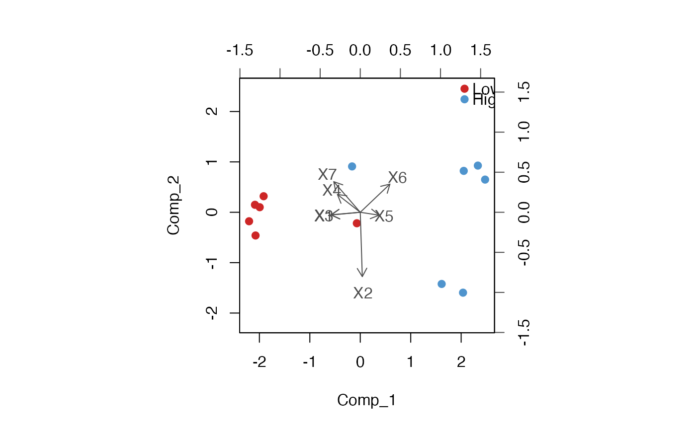

This helper plots the individuals and predictors from a fitted
plsR or plsRglm model while coloring the
individuals according to a grouping variable.
Usage
classbiplot(
object,
group = NULL,
comps = 1:2,
col,
colvar = "gray30",
pch = 19,
cex = rep(par("cex"), 2),
xlabs = NULL,
ylabs = NULL,
point.labels = FALSE,
show.legend = TRUE,
legendpos = "topright",
var.axes = TRUE,
expand = 1,
xlim = NULL,
ylim = NULL,
arrow.len = 0.1,
main = NULL,
sub = NULL,
xlab = NULL,
ylab = NULL,
...
)Arguments
- object
an object containing score and loading matrices in
object$ttandobject$pp, typically returned byplsRorplsRglm.- group
optional grouping vector for the individuals. When supplied, observations are colored according to the levels of
group.- comps
integer vector of length 2 giving the components to display.
- col
colors for the individuals. If
groupis provided,colcan have length 1, the number of groups, or the number of individuals.- colvar
color used for variable labels, arrows and axes.
- pch
plotting character for the individuals.
- cex
character expansion. Length 1 is recycled to length 2: the first value is used for the individuals and the second one for the variables.
- xlabs
optional labels for the individuals.
- ylabs
optional labels for the variables.
- point.labels
shall the individuals be displayed using text labels instead of points? Defaults to
FALSE.- show.legend
shall a legend be added when
groupis provided? Defaults toTRUE.- legendpos
position of the legend as in
legend, defaults to"topright".- var.axes
shall arrows be drawn for the variables? Defaults to
TRUE.- expand
expansion factor for the variables layer, as in
biplot. Defaults to1.- xlim, ylim
limits for the scores panel. When both are missing they are chosen symmetrically as in
biplot.- arrow.len
length of the arrows for the variables.
- main, sub, xlab, ylab
usual graphical parameters passed to
plot.- ...
further graphical parameters passed to
plotfor the scores panel.
Value
Invisibly returns a list with the scores, loadings, colors, grouping factor and scaling ratio used in the plot.
Author
Frédéric Bertrand
frederic.bertrand@lecnam.net
https://fbertran.github.io/homepage/
Examples
data(Cornell)
modpls <- plsR(Y ~ ., data = Cornell, nt = 2)
#> ____************************************************____
#> ____Component____ 1 ____
#> ____Component____ 2 ____
#> ____Predicting X without NA neither in X nor in Y____
#> ****________________________________________________****
#>
grp <- factor(Cornell$Y > median(Cornell$Y), labels = c("Low", "High"))
classbiplot(modpls, group = grp, col = c("firebrick3", "steelblue3"))
